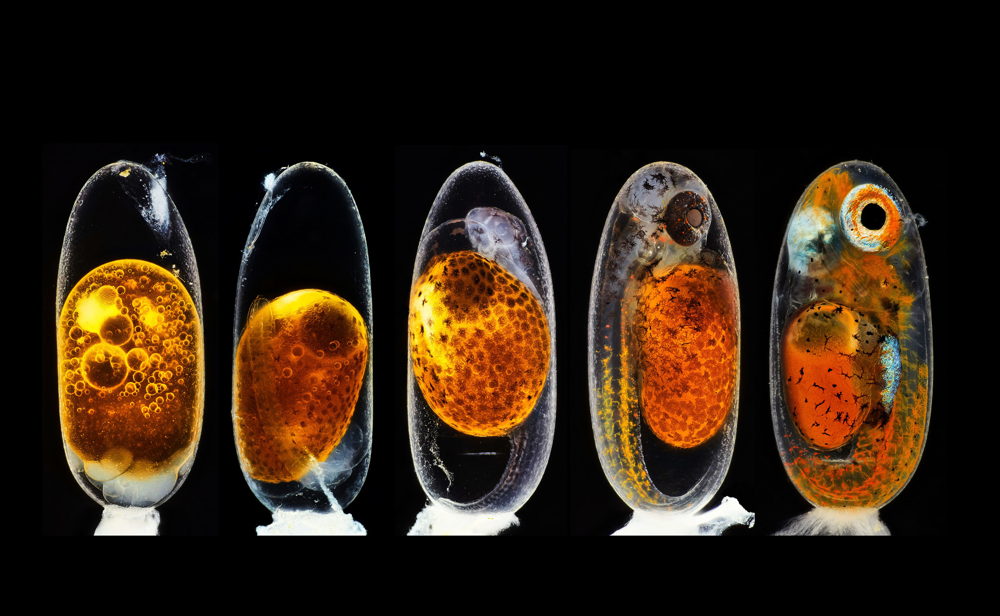

A collection of snippets, ideas, images, and little things that made my day or briefly convinced me to rethink my entire existence.
First successful PCR confirming
Acinetobacter baumannii.
Three months of painstaking lab work, followed by
a long wait for the primers. Then came this tiny
band, matching the positive control. I showed this picture to everyone and proudly
announced that “this is going into my submission.”
Came for the flowers, stayed for the photo.
I was taking photos of flowers when this bee suddenly
showed up. Naturally, I assumed it wanted a photo too.
Took a few shots, and then it flew away. I suppose
that was its entire modelling career.
The aurora was better in person.
I met this guy from Peru while he was visiting Umeå
, and somehow we ended up looking for
aurora together. Neither of us had seen one up close
before. While the aurora was great, the photo,
unfortunately, had to work with my camera.
The photographer became the subject.
Someone (probably my father) took this photo of me and my mom while I was trying to take
a photo of her. Is this considered metaphotography or am I just overthinking a photo?
The view was breathtaking. Unfortunately, so was my sudden realization that none of this makes sense.
Someone happened to photograph the exact moment I was questioning my entire existence. Honestly, fair use of a camera.
The case of the mysterious little heart.
A mysterious heart-shaped specimen has appeared under the microscope, and the case is far from elementary.
I have examined every evidence yet I have no idea what it is. I am beginning to suspect the microscope.
Care to help me crack the case before I accuse the instrument?
The tree understood the assignment.
This was the view from my kitchen in Umeå. The tree stayed there through summer, snow, darkness, and whatever else Scandinavian weather decided to throw at it.
Somehow, it always looked like the tree knew exactly what it was doing.
The thesis was unfinished. The ceremony was not.
Somehow, they let me graduate. Here I am taking a spurious scroll from Tora Holmberg, despite not having submitted my thesis at the time.
I learned a lot, made some great memories and friends. If I am being selfish, I really wanted to do a PhD there. But, every experiment needs an endpoint, and apparently this was mine.
The larva stopped. I stared. It stared back.
I spent a lot of time observing zebrafish larvae under microscopes and watching them develop. At this stage, they are usually busy swimming around.
This one briefly stopped, giving me what felt like a very deliberate look. I know it was probably just existing. Still, I would like to believe it wanted to say hi.
Before anyone asks, yes, I followed all the biosafety protocols. Mostly.
I was proud of my streak plate, so naturally I wanted to take a photo to show off.
The reddish background made it look quite interesting, but all credit goes to A. baumannii metabolism. No need to worry about biosecurity because
I know my bacterial cultures are well cultured ^_^ .
I would like to know what I knew.
This is one of my childhood photos that my parents had printed and mounted on a wall. I asked them why I was smiling when they took this photo, but they could not tell me.
Since AI was not really a thing at the time, I highly doubt this image is a deepfake. Perhaps the memory is still somewhere, lying dormant.

I am so jealous of this picture.
This one took 2nd place in the Nikon Small World 2020 photomicrography competition, showcasing the embryonic development of a clownfish (Amphiprion percula) on days 1, 3 (morning and evening), 5, and 9.
I saw something similar while watching zebrafish larvae develop over 5 days. They are remarkably similar in how they grow and develop. FYI, the yellow glowing object
is the egg yolk (later the yolk becomes part of its belly, how cool is that!!!), from which the developing embryo gets its nutrients.
I so wish I could take a picture like this! 🔬🐠
My 21/23 strains got their own graduation photo. I did one last gel run with them before wrapping up my master’s thesis. Basically, my attempt at making an yearbook, but with agarose instead of awkward smiles.
After all the PCR drama, failed experiments, and countless “why is there no band?!” moments, I somehow got attached as I was wrapping things up. The remaining two were missing, as usual.